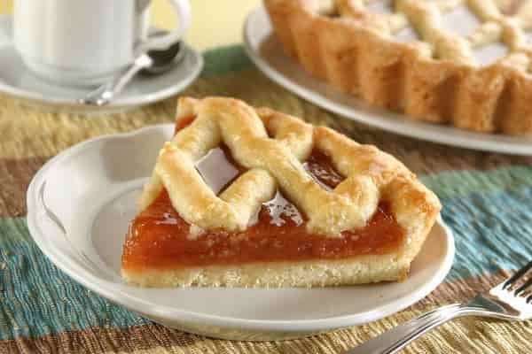

Recetas de Cocina
Como se hace una pasta Frola:

Receta de Pasta Frola que utilizamos en nuestro curso de pastelería online:
Las mejores recetas Argentinas las encuentras en nuestro site.
Es facil, rapido y riquisima para compartir con amigos y amigas
- Harina 0000 – 200 gr.
- Azúcar 100 gr.
- Manteca 100 gr.
- Yema 1 u.
- Huevo 1/2 u.
- 1 cucharada de esencia de vainilla
- Ralladura de 1 limón
- Polvo de hornear 2 gr.
- Dulce a elección 350 gr.
- Opcional gel de brillo y coco rallado para decorar.
Pasos para hacer la Pasta Frola más rica del mundo:
- Colocar en un bolw o batidora la harina, polvo de hornear y la manteca cortada en trozos pero fría.
- Hacer un arenado con ayuda de un cornet o lira en batidora (mezclar hasta que quede como arena)
- Agregar yemas, huevos, esencia, azúcar y ralladura. Integrar bien con el arenado.
- Volcar en la mesada y unir sin amasar
- Colocar en un film y llevar a heladera, hasta que este bien fria y la puedas manipular.
- Separar un poco de masa para armar el “enrejado”
- Estirar hasta que quede aproximadamente de 5 mm. y fonzar en el molde de tarta (esta receta es para molde 16/18 cm.)
- Colocar el dulce y el enrejado.
- Introducir en horno precalentado por 20 a 30 min a 180 grados.
- Dejar enfriar, pintar con gel de brillo y coco rallado, etc.
- Disfrutar con un buen mate y la más linda compañía.
| Titulo1 |
Titulo2 |
Titulo3 |
| elemento1 |
elemento2 |
elemento3 |
| elemento1 |
elemento2 |
elemento3 |
| elemento1 |
elemento2 |
elemento3 |